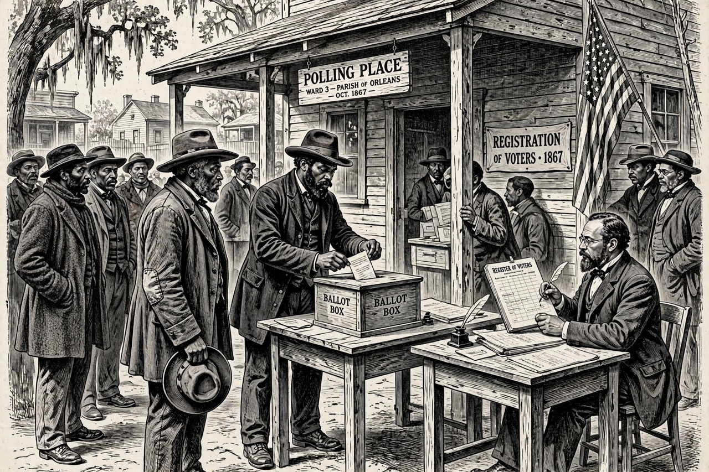

Reconstruction era
| Period | 1865–1877 (1863–1877 in some accounts) |
|---|---|
| Location | United States, especially the South |
| Key legislation | Reconstruction Acts; 13th, 14th, 15th Amendments; Enforcement Acts |
| Outcome | Compromise of 1877; end of federal occupation of the South |

The Reconstruction era was the period in American history after the Civil War (1861–1865), conventionally dated 1865 to 1877, during which the United States grappled with reintegrating the former Confederate states into the Union and determining the legal status of African Americans, including the recently freed enslaved people. Reconstruction was a revolutionary experiment in interracial democracy, whose achievements were later overthrown by white supremacist violence and the political settlement of 1877.
Presidential and Congressional Reconstruction
President Abraham Lincoln proposed a lenient "ten percent plan" for readmitting states; after his assassination in April 1865, Andrew Johnson continued a permissive policy under which Southern states enacted Black Codes restricting freedmen's rights. The Radical Republicans in Congress responded with the Civil Rights Act of 1866 and, over Johnson's vetoes, the Reconstruction Acts of 1867, which placed the South under military rule and required new constitutions guaranteeing Black male suffrage. Johnson's obstruction led to his impeachment in 1868, which failed by one vote in the Senate.
Amendments and achievements
Three constitutional amendments transformed American law: the Thirteenth (1865) abolished slavery, the Fourteenth (1868) guaranteed citizenship and equal protection, and the Fifteenth (1870) prohibited denying the vote on account of race. Biracial Reconstruction governments built public school systems, modernized infrastructure, and repealed discriminatory laws; some two thousand African Americans held public office, including sixteen in Congress.
Overthrow and legacy
Paramilitary violence by groups such as the Ku Klux Klan, suppressed for a time by the Enforcement Acts under President Ulysses S. Grant, resumed in the 1870s as Northern support waned. The disputed election of 1876 was resolved by the Compromise of 1877, which made Rutherford B. Hayes president in exchange for withdrawing the last federal troops from the South. "Redeemer" governments then consolidated white Democratic rule, and disfranchisement and Jim Crow segregation followed. Historians once influenced by the Dunning School's hostile account now generally view Reconstruction as an unfinished revolution whose promises were taken up again by the civil rights movement a century later; its politics revolved around the Democratic Party of the South and its Republican opponents. Violence and intimidation, including lynching, and the northward movement of Black Southerners in the Great Migration were part of its aftermath.